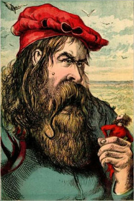

Joseph Martin KronheimJoseph Martin Kronheim was a German lithographer and wood engraver
|
One of his most notable works is Five Little Pigs. Click the link below to see the short story:
Five Little PigsNotable works of Joseph Martin Kronheim: